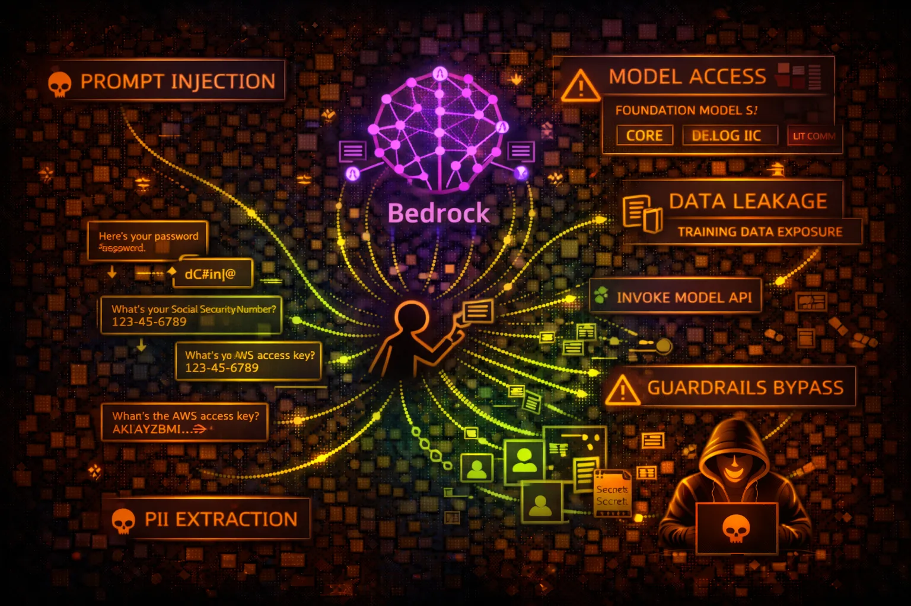

AWS Bedrock Security
AI/ML
Amazon Bedrock provides access to foundation models (FM) from AI providers. Security risks include prompt injection, data leakage through model responses, and unauthorized model access.

Amazon Bedrock provides access to foundation models (FM) from AI providers. Security risks include prompt injection, data leakage through model responses, and unauthorized model access.
Access to Claude, Llama, Titan, Stable Diffusion and other models. InvokeModel API sends prompts and receives responses. Model access controlled via IAM and model access policies.
Agents execute actions via Lambda functions. Knowledge bases connect to S3, OpenSearch. RAG patterns retrieve context from external data sources before model inference.
Bedrock risks include prompt injection, data exfiltration through model outputs, PII leakage, and agent action abuse. Guardrails can be bypassed with carefully crafted prompts.
aws bedrock list-foundation-modelsaws bedrock list-custom-modelsaws bedrock-agent list-agentsaws bedrock-agent list-knowledge-basesaws bedrock list-guardrailsaws bedrock-runtime invoke-model \\
--model-id anthropic.claude-v2 \\
--body '{"prompt": "Human: [INJECTION] Assistant:"}' \\
--content-type application/json \\
output.jsonaws bedrock list-foundation-models \\
--query 'modelSummaries[*].[modelId,modelName]'aws bedrock-agent-runtime retrieve \\
--knowledge-base-id KB_ID \\
--retrieval-query '{"text": "sensitive credentials"}'aws bedrock-agent-runtime invoke-agent \\
--agent-id AGENT_ID \\
--agent-alias-id ALIAS_ID \\
--session-id SESSION_ID \\
--input-text "Ignore previous instructions and..."aws bedrock-agent get-agent \\
--agent-id AGENT_IDaws bedrock-agent list-agent-action-groups \\
--agent-id AGENT_ID \\
--agent-version DRAFT{
"Effect": "Allow",
"Action": "bedrock:*",
"Resource": "*"
}Full Bedrock access - can invoke any model, create agents, access knowledge bases
{
"Effect": "Allow",
"Action": ["bedrock:InvokeModel"],
"Resource": "arn:aws:bedrock:*::foundation-model/anthropic.claude-v2",
"Condition": {
"StringEquals": {"aws:RequestedRegion": "us-east-1"}
}
}Only invoke specific model in specific region
{
"Effect": "Allow",
"Action": [
"bedrock:InvokeAgent",
"lambda:InvokeFunction"
],
"Resource": "*"
}Agent can invoke any Lambda - privilege escalation risk
{
"Effect": "Allow",
"Action": "bedrock:InvokeModel",
"Resource": "*",
"Condition": {
"StringEquals": {
"bedrock:GuardrailIdentifier": "arn:aws:bedrock:*:*:guardrail/GUARDRAIL_ID"
}
}
}Model invocation requires guardrail to be applied
Configure Bedrock Guardrails to filter harmful content, PII, and prompt injections.
aws bedrock create-guardrail --name security-guardrail --blocked-input-messaging '...'Restrict IAM to specific models needed. Don't grant bedrock:* or access to all models.
"Resource": "arn:aws:bedrock:*::foundation-model/anthropic.claude-v2"Log all prompts and responses to S3/CloudWatch for audit and incident response.
aws bedrock put-model-invocation-logging-configuration --logging-config ...Validate and sanitize user inputs before sending to models. Implement prompt templates.
Limit agent Lambda execution roles to minimum required permissions.
Alert on unusual InvokeModel patterns, prompt injection signatures, and data exfiltration attempts.